Bookshelf
A quiet place to keep track of the books you read, and to write down what they meant to you.
Bookshelf is a free reading journal for Linux, Windows and Mac. Put books on your shelves, note when you started and finished them, and write your own summary of each one in a calm writing space. Everything stays on your own computer.
Download Bookshelf How to install
Free and open source · No account, no ads, no tracking
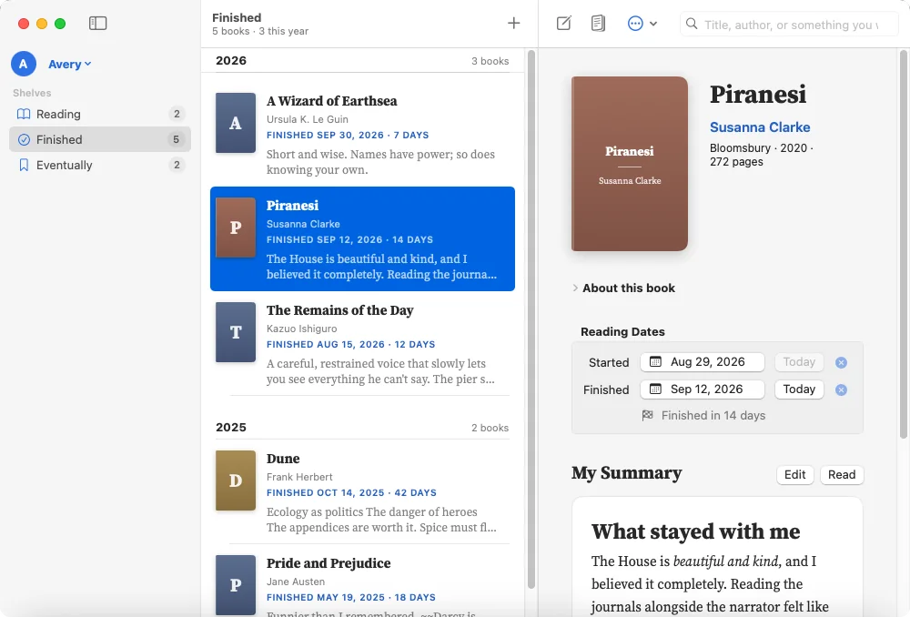
At home on your computer
Bookshelf is a native app on each system, so it looks and feels like it belongs there. The shelves, the writing and the reading are the same everywhere. These screenshots use a made-up reader’s journal.
Linux
Made with GTK 4 and libadwaita, so it fits right in on GNOME.
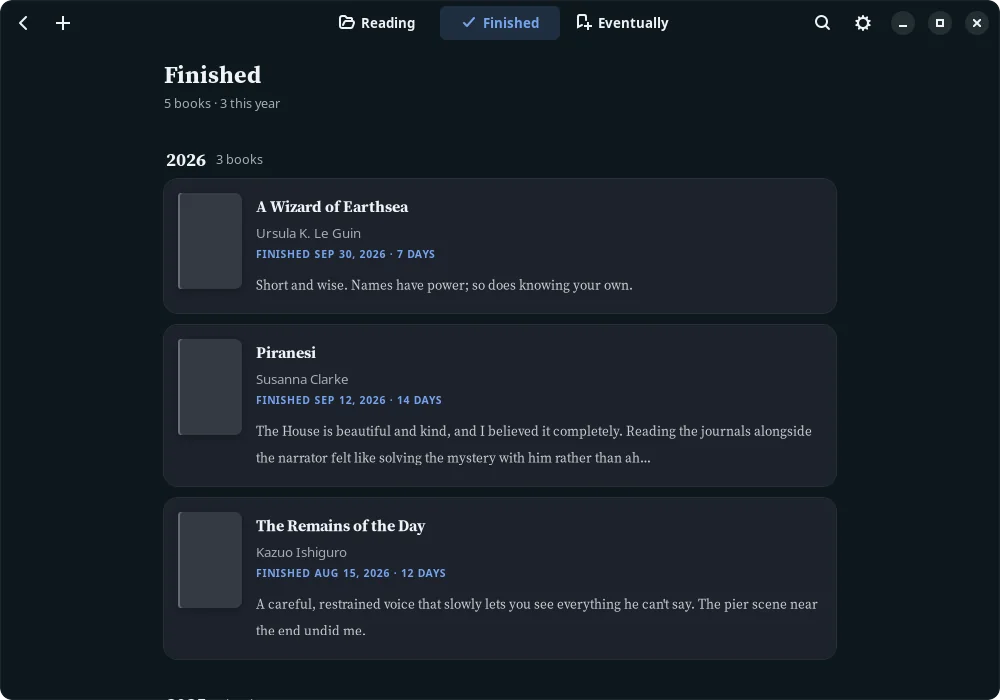
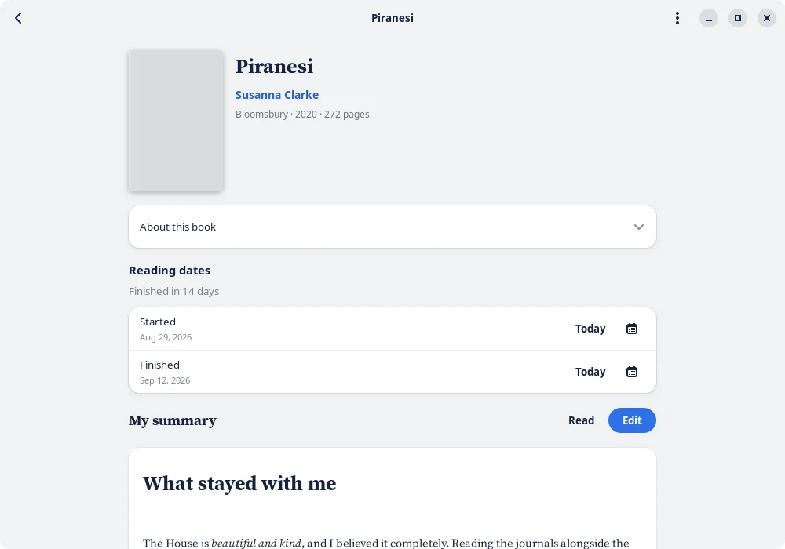
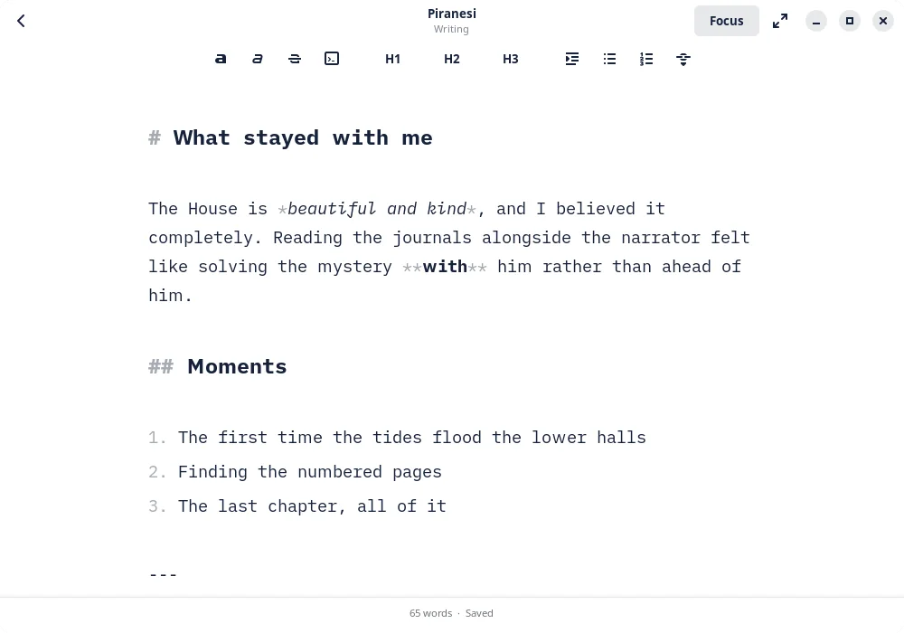
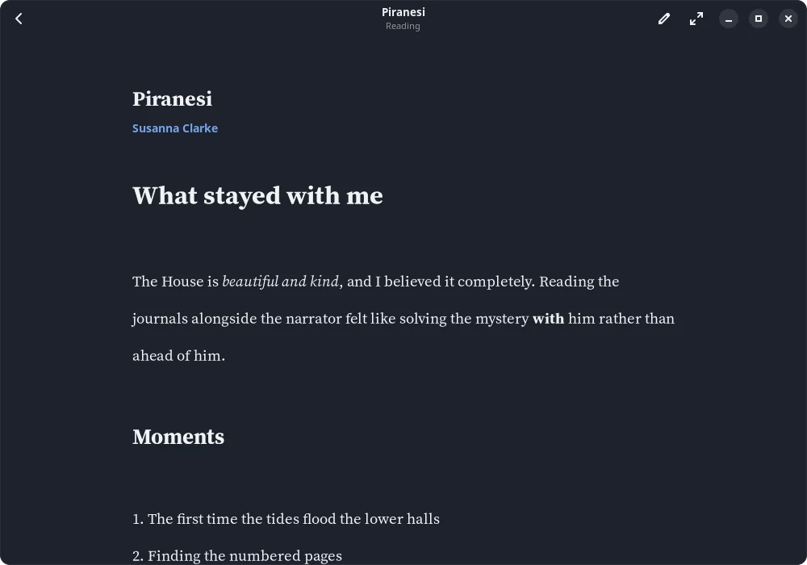
Windows
Made with WinUI 3, like Windows 11’s own apps. Works on Windows 10 too.
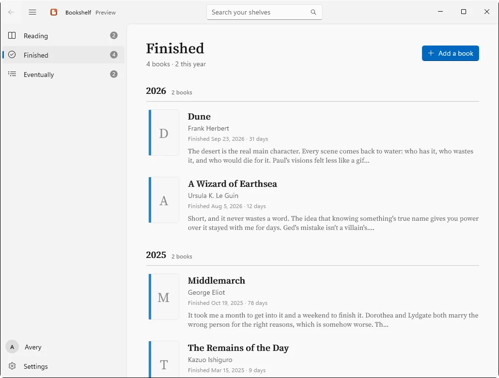
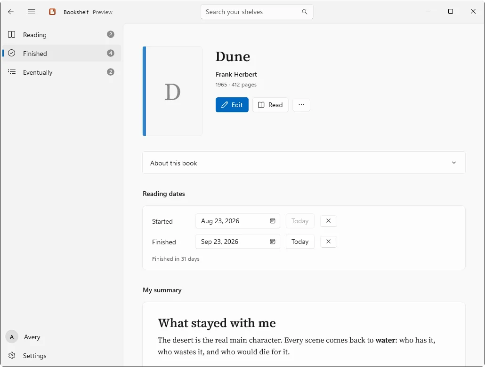
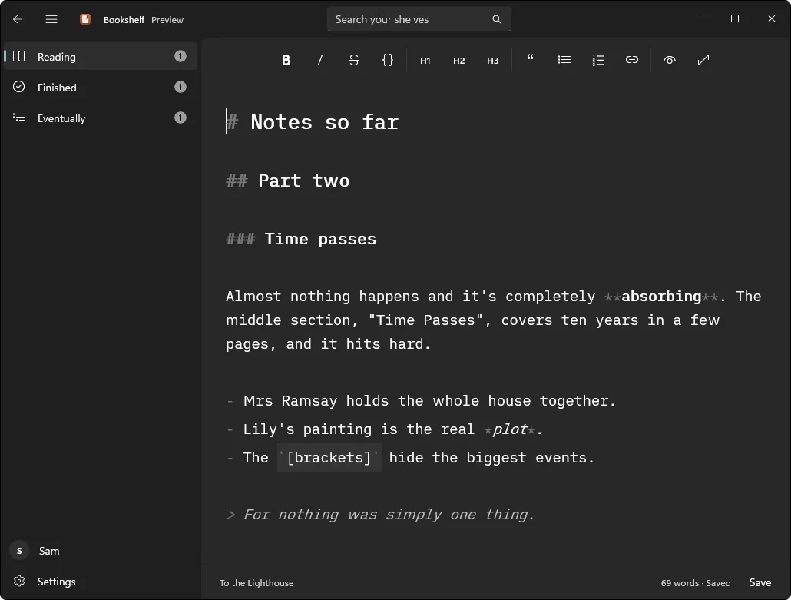
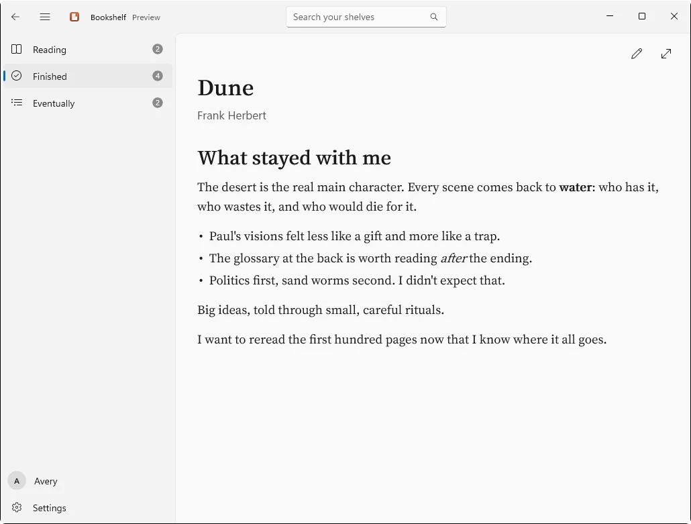
Mac
Made with SwiftUI, with the sidebar, menus and keyboard shortcuts you’d expect on a Mac.
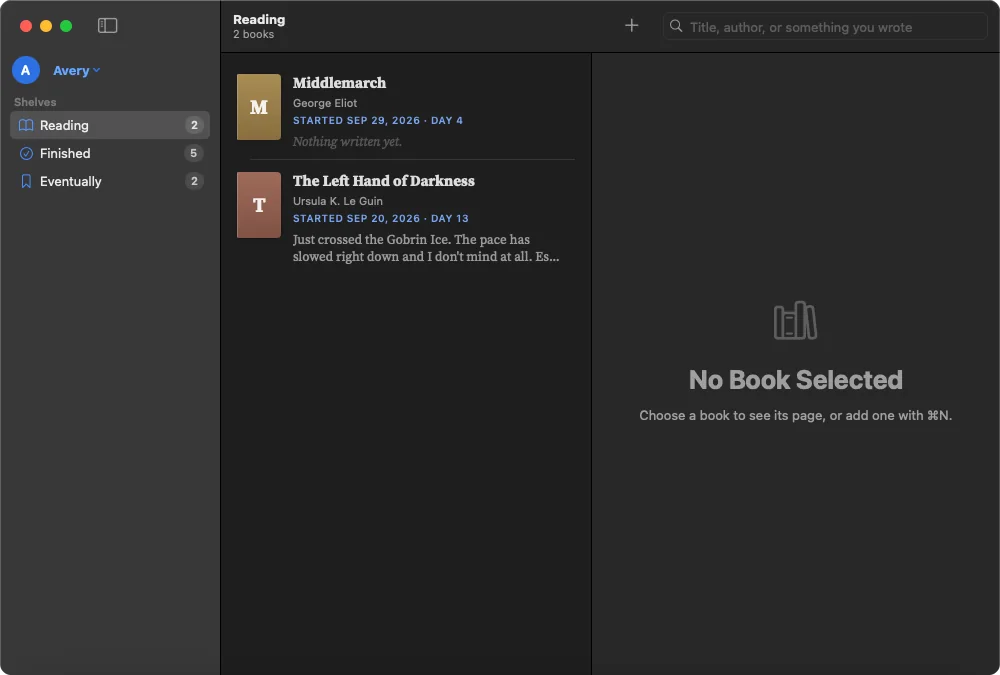
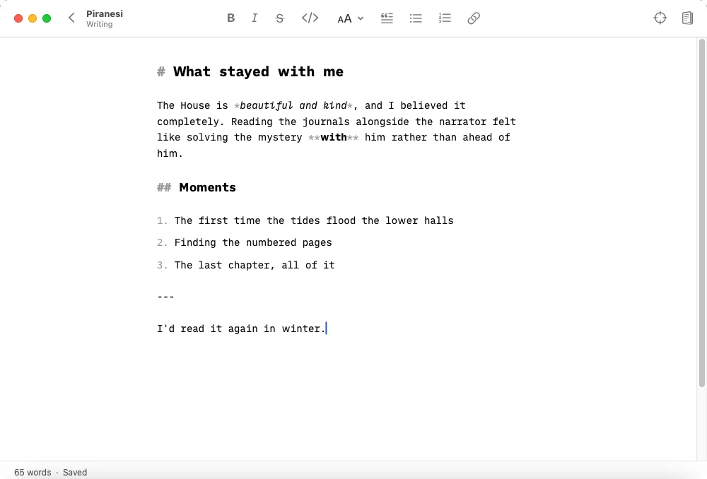
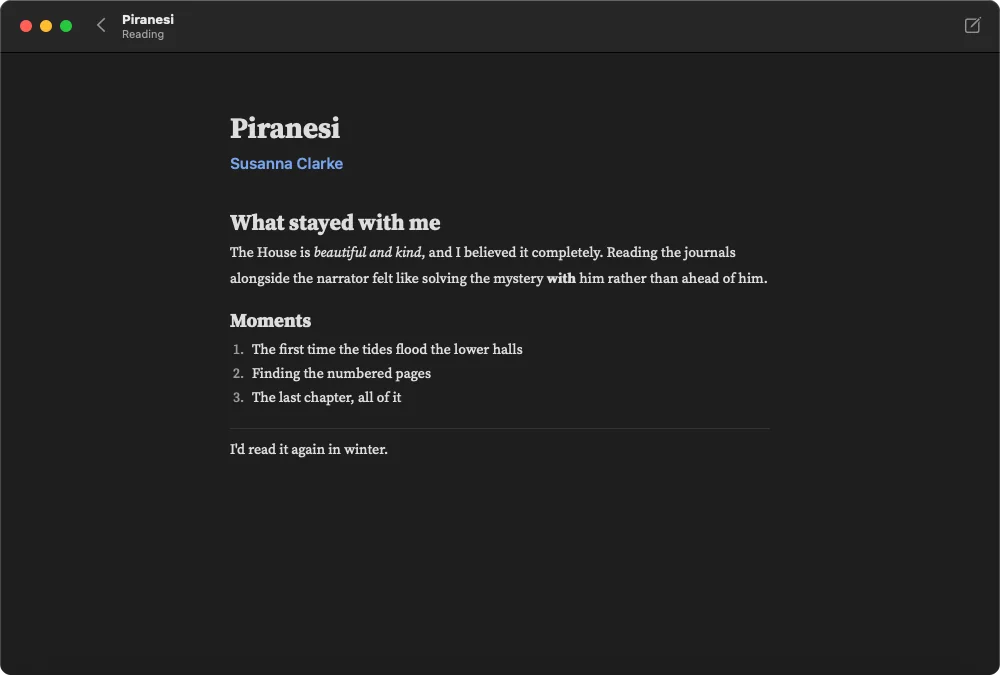
What it does
Three shelves
Reading, Finished and Eventually. Finished books are grouped by year, with a count of this year’s.
Add any book
Search Open Library by title, author or ISBN. The cover and description come with it.
Reading dates
Note when you started and finished, and see how many days it took. A book’s dates decide its shelf.
A calm writer
One column of text and nothing else. Markdown formatting, with the marks dimmed, and a few gentle prompts on an empty page.
Focus mode and full screen
Everything but the sentence you’re writing fades back, and the line stays centred like a typewriter.
Saves as you type
No save button to remember. If saving ever fails, Bookshelf keeps your words safe instead of losing them.
A reader for your summaries
Read what you wrote, nicely set, with nothing around it.
Search everything
Titles, authors and every word you’ve written, across all three shelves at once.
Read it again
Start a fresh entry for a favourite, with its own dates and summary. The first one stays as it was.
A profile for everyone
Everyone who reads in your home can have their own shelves, summaries and settings.
Make it yours
Light or dark, eight accent colors or any you like, and your choice of font, text size, line spacing and page width.
Backups and export
A daily copy of your journal, kept wherever you like. Export every summary as a plain Markdown file.
Every feature is explained in the user manual, which is also built into the app (F1 on Linux and Windows, ⌘? on a Mac).
Install
Bookshelf is free. Download the file for your computer from the latest release on GitHub, then follow the steps for your system below.
The first time you open it, your computer may ask you to confirm. That’s because Bookshelf is a free project, not a company with paid certificates. Below is exactly what you’ll see, and why.
What to download
- Windows
Bookshelf-0.9.0-setup-x64.exeWindows 10 (version 1809 or newer) or Windows 11 on a 64-bit (x64) PC, with Windows Update up to date - Mac
Bookshelf-0.9.0.dmgmacOS 14 Sonoma or newer - Linux
Bookshelf-0.9.0-x86_64.AppImageA 64-bit PC with Ubuntu 24.04, Fedora 40, Debian 13 or newer - Checking
SHA256SUMSOptional: see Checking your download
Windows
- Download the setup file and open it.
- If a blue box says
Windows protected your PC
, click More info, then Run anyway. - Follow the installer’s steps. It installs Bookshelf just for you, so it doesn’t need an administrator password.
- Open Bookshelf from the Start menu.
What to expect, and why
The blue Windows protected your PC
box. Windows shows it for apps that aren’t signed with a paid code-signing certificate. Those certificates cost money every year, and Bookshelf is a free, open-source project, so it isn’t signed yet. The box doesn’t mean anything is wrong with the file. If you’d like to be sure your copy is genuine, see Checking your download.
A message asking you to update Windows. Bookshelf uses a security feature that only up-to-date Windows has. If a required update is missing, the installer stops and says so, before changing anything. Run Windows Update, restart if it asks, and open the installer again.
Removing it. Go to Settings › Apps, find Bookshelf and choose Uninstall. Your journal is kept, so if you install Bookshelf again, your shelves are still there.
Mac
- Open the
.dmgfile and drag Bookshelf onto Applications. - Open Bookshelf from your Applications folder. The first time, your Mac won’t open it and says it can’t check it. Click Done.
- Open System Settings › Privacy & Security, scroll down to the message about Bookshelf, click Open Anyway, and confirm.
- That’s all. From now on, Bookshelf opens like any other app.
What to expect, and why
The Mac blocks the first launch. Apple checks (“notarizes”) apps for developers who pay $99 a year. Bookshelf isn’t notarized yet, so your Mac asks you to confirm once that you trust it. You only need to do this the first time.
On macOS 14 Sonoma there’s a shortcut: Control-click (or right-click) Bookshelf in Applications, choose Open, then Open again.
Removing it. Drag Bookshelf from Applications to the Trash. Your journal stays on your Mac.
Linux
- Download the AppImage.
- Make it executable: in your file manager, open the file’s Properties and turn on Allow executing file as program (the wording varies). Or, in a terminal:
chmod +x Bookshelf-*.AppImage - Double-click it to start Bookshelf.
What to expect, and why
Nothing gets installed. An AppImage is the whole app in one file, so it doesn’t change your system. Downloaded files aren’t allowed to run until you say so, which is why step 2 is needed.
On Ubuntu, AppImages need one small extra package. If Bookshelf doesn’t start, run sudo apt install libfuse2t64 and try again.
Removing it. Delete the file. Your journal stays in ~/.local/share/bookshelf.
Checking your download
This is optional, for anyone who’d like to be sure their copy is exactly what was published. Each release has two kinds of proof:
- A fingerprint. The
SHA256SUMSfile lists a fingerprint (a SHA-256 checksum) for every download. Work out your file’s fingerprint and check it matches its line inSHA256SUMS:- Windows, in PowerShell:
Get-FileHash .\Bookshelf-*-setup-x64.exe - Mac, in Terminal:
shasum -a 256 Bookshelf-*.dmg - Linux, next to
SHA256SUMS:sha256sum -c SHA256SUMS --ignore-missing
- Windows, in PowerShell:
- GitHub’s proof of where it came from. Every file is built by GitHub from this project’s public code, and GitHub signs a record of that (an
attestation
). With the GitHub command-line tool, signed in, run this with the name of the file you downloaded:
It confirms the file was built from this repository’s code, not uploaded by someone else.gh attestation verify the-file-you-downloaded --repo E36lewis/bookshelf
Private by design
- Your journal stays on your computer. There’s no account and no sign-in, and your summaries never leave your computer.
- It only goes online to find books. Bookshelf connects to
openlibrary.organdcovers.openlibrary.organd nothing else. Open Library is a free, public library catalogue run by the Internet Archive. It sees what you search for, and sends back book details and covers. - An email address is optional. If you add one to your profile, it’s sent along with those requests, so Open Library can contact you if something ever causes them a problem. Leave it blank to send nothing.
- Your writing is always yours. Daily backups keep the last seven copies of your journal, and you can export every summary as a plain Markdown file.
- Profiles keep shelves apart, but aren’t locked. Anyone using your computer account can open any profile.
- This website doesn’t track you either. No cookies, no analytics, and nothing loaded from anywhere else.
Free and open source
Bookshelf is free software under the GNU General Public License, version 3 or later, with an extra permission for the Windows app’s use of Microsoft’s Windows App SDK (see NOTICE.md). You can read, change and share the code.